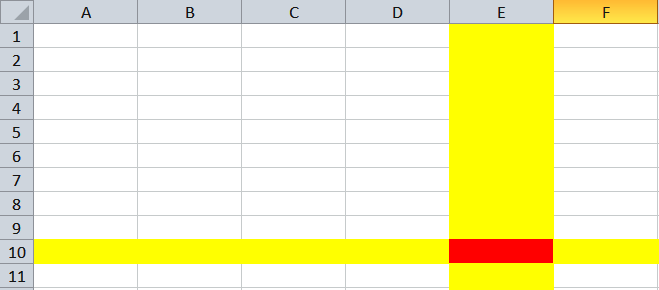
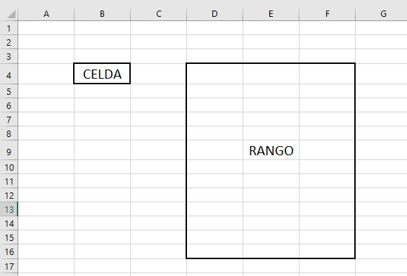
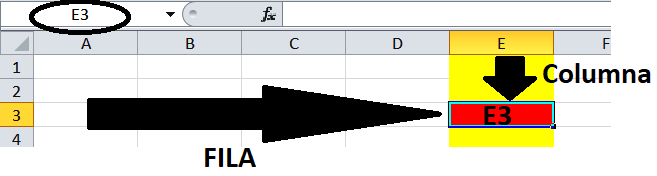
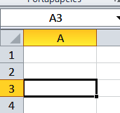
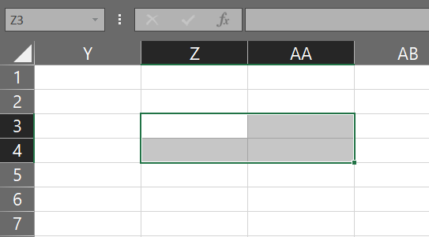

Nociones básicas 2
Filas y Columnas
Una hoja o planilla de Excel está compuesta por filas (horizontales) y columnas (verticales).
Las columnas se designan con letras, desde la A a la Z primero, luego AA hasta AZ, BA hasta BZ hasta llegar a la última, la columna XFD. ¡¡¡Sí, son 16.384 columnas!!!
Las filas, mientras tanto, se designan con números, del 1 al 1048576
Celdas
Las celdas constituyen la unidad básica y mínima para guardar datos en la hoja.
Quedan definidas por la intesección de una columna con una fila.


Por lo tanto... Excel provee actualmente una cantidad muy grande de celdas: exactamente 17.179.869.184 donde en cada una podemos ingresar valores constantes o fórmulas.
Entonces... con esta cantidad de celdas, ¿cómo identificamos cada una de ellas?
Referencia de celda
Cada una de las celdas tiene una dirección, ubicación dentro de la hoja o libro. Esta ubicación se la denomina referencia de celda.

Esta referencia está dada por la Letra de la columna seguida inmediatamente (formalmente hablando; concatenada) al número de fila.
Ejemplos:
A1 (la primera celda)
B19
AA2
ZZ15
Celda activa
De todas las celdas, solamente una es la celda activa.
Esta es la celda donde vamos a ingresar o a editar datos.

La reconocemos por su borde más grueso, y por el botón de autollenado que tiene en la esquina inferior derecha.
Es la celda cuyo contenido vemos en la barra de fórmulas, y cuya referencia vemos en el cuadro de direcciones a la izquierda de la barra de fórmulas.
Rango
Un rango es un grupo de celdas contiguas. Su dirección o referencia está compuesta por la dirección de la celda superior izquierda seguida de dos puntos y la dirección de la celda inferior derecha.

En la imagen, el rango es el Z3:AA4.